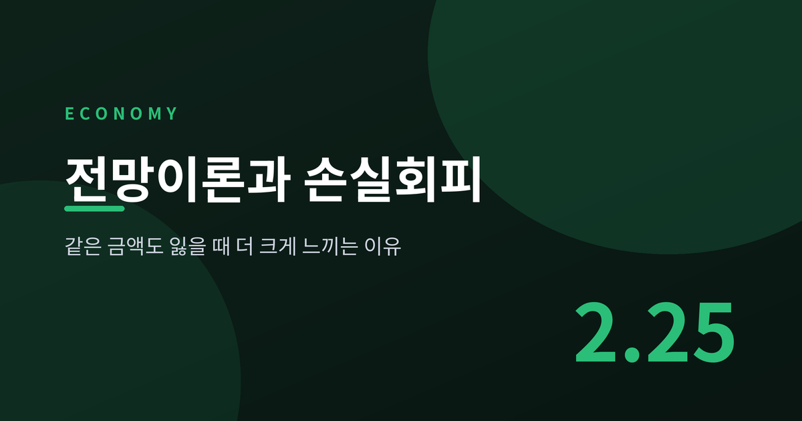
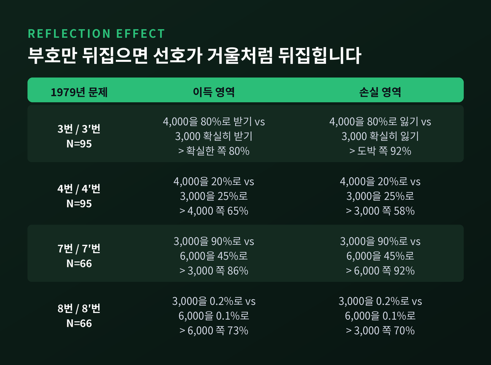
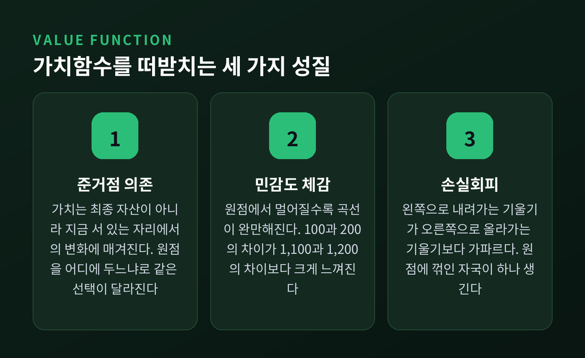
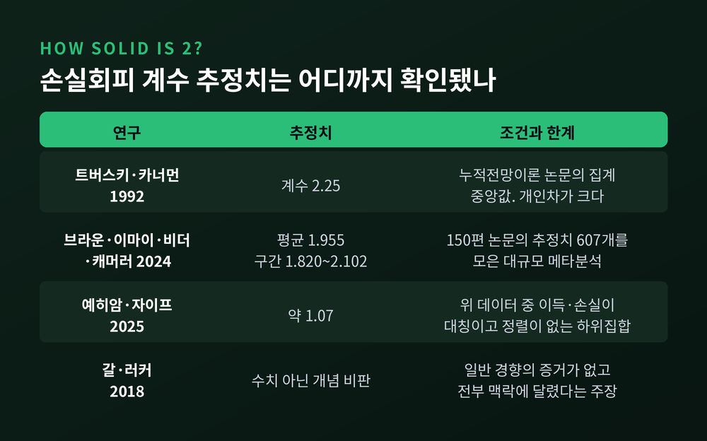
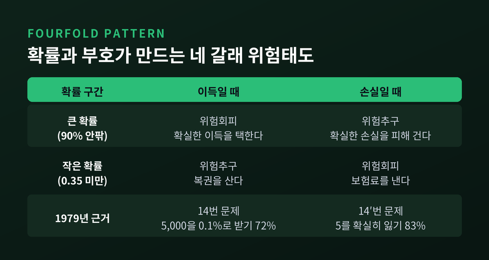
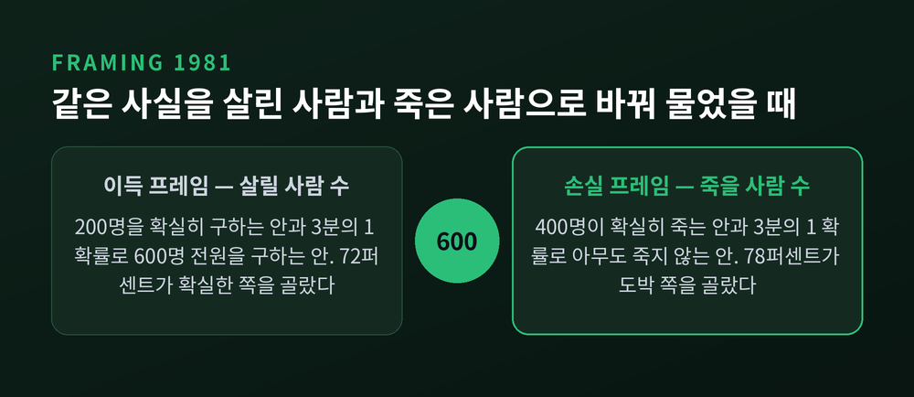
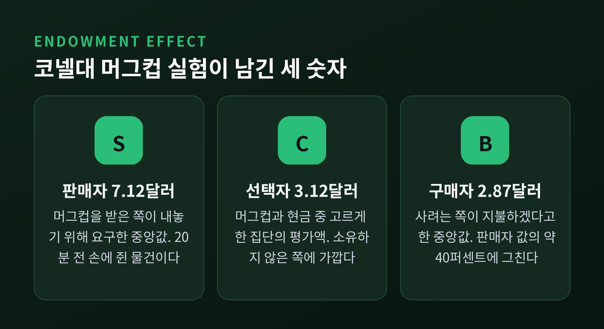

전망이론이 밝힌 손실회피, 같은 금액도 잃을 때 더 크게 느끼는 이유

이번 글에서는 전망이론이 손실회피를 어떻게 설명하는지 정리해 보겠습니다. 1979년 논문의 실제 실험 수치부터, 최근 재현연구가 제기한 반론까지 함께 살펴보려 합니다.
- 사람은 최종 자산이 아니라 준거점에서의 변화로 손익을 느낍니다. 그래서 같은 금액도 잃을 때 더 크게 다가옵니다.
- 손실회피 계수는 1992년 추정치가 2.25, 2024년 메타분석 평균이 1.955였습니다. 다만 2025년 재분석은 설계에 따라 1.07까지 내려간다고 보고했습니다.
- 확률가중과 프레이밍까지 더하면, 보험과 복권을 동시에 사는 사람도 하나의 이론으로 설명됩니다.
기대효용이론에 처음 금이 간 자리
경제학은 오랫동안 기대효용이론을 표준으로 삼았습니다. 사람은 최종 자산의 효용을 계산하고, 그 기대값이 가장 큰 쪽을 고른다는 설명입니다.
1953년 모리스 알레가 여기에 반례를 내놓았습니다. 그는 1952년 파리에서 열린 학술회의에서 경제학자들에게 직접 선택 문제를 냈고, 그 답이 이론과 어긋난다는 사실을 보여주었습니다. 결과는 같은 해가 아니라 이듬해 『에코노메트리카』에 실렸습니다.
문제는 이렇게 생겼습니다. 첫 번째 실험에서는 100만 달러를 확실히 받는 쪽과, 89% 확률로 100만 달러·10% 확률로 500만 달러·1% 확률로 0을 받는 쪽 중에 고릅니다. 두 번째 실험에서는 11% 확률로 100만 달러를 받는 쪽과, 10% 확률로 500만 달러를 받는 쪽 중에 고릅니다.
대다수는 첫 번째에서 확실한 100만 달러를, 두 번째에서 500만 달러 쪽을 택합니다. 그런데 두 실험은 89%의 공통 결과만 덜어내면 완전히 같은 선택입니다. 기대효용이론의 독립성 공리가 맞다면 일어날 수 없는 역전입니다.
알레의 지적은 이것이었습니다. 1%의 실패 확률에는 '확실히 받을 수 있었는데 놓쳤다'는 실망이 얹혀 있고, 그 감정은 다른 선택지의 확실성에 기대어 생긴다는 것입니다. 부분을 따로 떼어 평가할 수 없다는 뜻입니다.
1979년 논문이 바꾼 질문
대니얼 카너먼과 아모스 트버스키는 1979년 3월 『에코노메트리카』 47권 2호에 「전망이론: 위험하의 의사결정 분석」을 발표했습니다. 이 논문은 반세기 경제학 문헌에서 가장 많이 인용된 글 가운데 하나가 되었습니다.
응답자는 이스라엘 대학의 학생과 교수진이었습니다. 금액 단위는 이스라엘 파운드였고, 논문은 "가구의 월 순소득 중앙값이 약 3,000 이스라엘 파운드"라고 명시해 금액의 무게를 알려 주었습니다.
수치를 보겠습니다. 3번 문제는 80% 확률로 4,000을 받는 쪽과 3,000을 확실히 받는 쪽의 선택입니다. 95명 중 80%가 확실한 3,000을 골랐습니다. 기대값은 3,200 대 3,000으로 도박 쪽이 컸는데도 그랬습니다.
4번 문제는 두 확률을 똑같이 4분의 1로 줄인 것뿐입니다. 20% 확률의 4,000과 25% 확률의 3,000. 이번에는 65%가 4,000 쪽으로 옮겨 갔습니다. 확실성이 사라지자 선호가 뒤집혔습니다.
진짜 반전은 부호를 뒤집었을 때 나타났습니다. 3번 문제를 손실로 바꾸면, 즉 80% 확률로 4,000을 잃는 쪽과 3,000을 확실히 잃는 쪽을 놓고 고르게 하면 92%가 도박을 택했습니다. 기대손실이 3,200으로 더 나쁜 쪽인데도 그랬습니다.
두 저자는 이 거울상 패턴을 반사 효과라고 불렀습니다. 이득에서의 위험회피가 손실에서는 위험추구로 바뀝니다.

가치함수의 세 가지 성질
전망이론의 핵심은 가치함수입니다. 그래프를 직접 그려 보시면 이해가 빠릅니다.
가로축은 준거점에서의 변화량입니다. 원점 오른쪽이 이득, 왼쪽이 손실입니다. 세로축은 그 변화에 매기는 주관적 가치입니다.
첫째, 준거점 의존입니다. 함수의 원점이 최종 자산이 아니라 지금 서 있는 자리에 놓입니다. 논문은 이를 두고 돈에 대한 태도가 "각 페이지마다 특정 자산 위치에서의 가치함수를 보여주는 한 권의 책"으로 서술된다고 비유했습니다.
논문 11번과 12번 문제가 이 점을 잘 보여줍니다. 한쪽은 1,000을 미리 받고 50% 확률의 1,000을 더 받을지 500을 확실히 받을지 고릅니다. 다른 쪽은 2,000을 미리 받고 50% 확률로 1,000을 잃을지 500을 확실히 잃을지 고릅니다. 최종 자산으로 보면 두 선택지는 완전히 동일합니다. 그런데 앞에서는 84%가 확실한 쪽을, 뒤에서는 69%가 도박을 택했습니다.
둘째, 민감도 체감입니다. 원점에서 멀어질수록 곡선이 완만해집니다. 논문의 표현을 빌리면, 100과 200의 차이가 1,100과 1,200의 차이보다 크게 느껴집니다. 이득 쪽은 위로 볼록하고, 손실 쪽은 아래로 볼록한 모양이 됩니다.
셋째, 손실회피입니다. 원점에서 왼쪽으로 내려가는 기울기가 오른쪽으로 올라가는 기울기보다 가파릅니다. 그래프로 보면 원점에 꺾인 자국이 하나 생깁니다. 손실회피는 곡선 전체의 굽은 정도가 아니라 바로 이 꺾임에 관한 이야기입니다.

손실회피 계수 2.25는 얼마나 단단한가
여기서 자주 오해가 생깁니다. "손실은 이득의 2배"라는 숫자는 1979년 논문에서 나온 것이 아닙니다. 1979년에는 "손실 쪽이 더 가파르다"는 정성적 주장만 있었습니다.
숫자가 붙은 것은 1992년입니다. 트버스키와 카너먼은 누적전망이론 논문에서 실험 선택 자료로 파라미터를 추정했고, 손실회피 계수 λ의 중앙값을 2.25로 제시했습니다. 가치함수 곡률은 이득과 손실 모두 0.88이었습니다.
이 값은 대규모로 재검증됐습니다. 브라운·이마이·비더·캐머러가 2024년 6월 『저널 오브 이코노믹 리터러처』에 실은 메타분석은 경제학·심리학·신경과학 등 150편 논문의 추정치 607개를 모았습니다. 평균 손실회피 계수는 1.955, 95% 확률구간은 1.820에서 2.102 사이였습니다.
그런데 2025년, 예히암과 자이프가 같은 데이터를 다시 뜯었습니다. 이들은 연구를 이득과 손실의 크기가 비대칭인 설계와 대칭인 설계로, 또 문항이 크기순으로 정렬된 설계와 그렇지 않은 설계로 나눴습니다.
결과는 이랬습니다. 손실이 이득보다 작게 제시되거나 문항이 정렬된 경우에는 강한 손실회피가 그대로 재현됐습니다. 반면 이득과 손실이 대칭이고 정렬이 없는 연구만 따로 모으자 계수가 약 1.07로 떨어졌고, 1.0보다 유의하게 크지 않았습니다.
개념 쪽에서도 반론이 있습니다. 갈과 러커는 2018년 『저널 오브 컨슈머 사이콜로지』에서 손실이 이득보다 크게 다가온다는 일반 경향의 증거가 없으며 모든 것이 맥락에 달렸다고 주장했습니다. 사이먼슨과 키베츠는 같은 지면에서, 결론은 과장이지만 손실회피를 조절변수에 달린 현상으로 다루자는 방향에는 동의한다고 답했습니다.
정리하면 이렇습니다. 손실회피는 실재합니다. 다만 2대1은 보편 상수가 아니라 조건에 따라 흔들리는 평균값에 가깝습니다.

작은 확률을 크게 보는 습관
전망이론에는 축이 하나 더 있습니다. 확률을 그대로 쓰지 않고 결정가중치로 바꿔 쓴다는 것입니다.
1979년 논문 초록은 이렇게 적었습니다. 결정가중치는 대체로 실제 확률보다 낮지만, 낮은 확률 구간에서는 예외라는 것입니다.
이 함수 역시 그려 보면 선명합니다. 가로축이 실제 확률, 세로축이 심리적 가중치입니다. 대각선을 하나 긋고 곡선을 그리면, 0 근처에서는 곡선이 대각선 위로 솟았다가 중간 구간에서 아래로 내려가 다시 1에서 만납니다. 옆으로 누운 S자를 뒤집어 놓은 모양입니다. 1992년 추정치로는 이득 쪽 계수가 0.61, 손실 쪽이 0.69였고, 대략 확률 0.35 아래에서 과대가중이 일어납니다.
논문 14번 문제가 이 효과를 보여줍니다. 0.1% 확률로 5,000을 받는 쪽과 5를 확실히 받는 쪽을 놓으면 72%가 복권 쪽을 택합니다. 부호를 뒤집어 0.1% 확률로 5,000을 잃는 쪽과 5를 확실히 잃는 쪽을 놓으면 83%가 확실한 작은 손실을 택합니다. 뒤쪽 5는 사실상 보험료입니다.
같은 사람이 복권도 사고 보험도 드는 이유가 여기 있습니다. 두 행동은 모순이 아니라 하나의 곡선에서 나온 두 지점입니다.

표현만 바꿔도 선택이 뒤집힙니다
준거점이 밖에서 정해질 수도 있습니다. 1981년 아시아 질병 문제가 그 사례입니다.
600명이 사망할 것으로 예상되는 질병에 두 가지 대책이 있습니다. 살릴 사람 수로 표현하면, 200명을 확실히 구하는 쪽과 3분의 1 확률로 600명 전원을 구하는 쪽입니다. 이때 72%가 확실한 쪽을 골랐습니다.
같은 내용을 죽을 사람 수로 바꿔 보겠습니다. 400명이 확실히 죽는 쪽과, 3분의 1 확률로 아무도 죽지 않는 쪽입니다. 이번에는 78%가 도박 쪽을 골랐습니다.
두 판본은 수학적으로 동일합니다. 바뀐 것은 준거점을 어디에 두게 만드는 문장뿐입니다.

이 효과는 재현연구에서도 살아남았습니다. 2018년 매니 랩스 2 프로젝트는 36개 국가·지역에서 15,305명을 대상으로 고전 연구 28개를 다시 검증했습니다. 프레이밍 효과는 55개 추정치를 합쳐 효과크기 g = 0.44, 신뢰구간 0.38에서 0.50으로 나왔습니다. 전체 재현 중 75%가 원논문보다 작은 효과를 보인 것과 비교하면 비교적 견고한 축에 듭니다.
머그컵과 주식 계좌에서 확인된 것
실험실 밖에서도 같은 기울기가 관찰됩니다.
카너먼과 크네치, 세일러는 1990년 『저널 오브 폴리티컬 이코노미』에 코넬대 실험을 보고했습니다. 참가자 절반에게 무작위로 커피 머그컵을 나눠 주고 시장을 열었습니다. 판매자가 부른 중앙값은 7.12달러, 구매자가 낸 값은 2.87달러였습니다. 머그컵과 현금 중 고르게 한 선택자 집단은 3.12달러로, 구매자 쪽에 가까웠습니다.
코즈 정리대로라면 머그컵의 절반가량이 거래돼야 합니다. 실제 거래량은 언제나 그보다 유의하게 적었습니다. 같은 참가자에게 유도가치 토큰으로 시장을 열면 예측된 거래량이 그대로 나왔습니다. 거래비용 탓이 아니라는 뜻입니다. 20분 전 누구 손에 물건이 놓였느냐가 값을 2.5배 갈랐습니다.
투자 계좌에서는 처분효과로 나타납니다. 테런스 오딘은 대형 할인증권사의 1만 개 가구 계좌를 1987년부터 1993년까지 들여다봤습니다. 실현이익비율은 0.148, 실현손실비율은 0.098이었습니다. 오른 종목은 팔고 내린 종목은 쥐고 있었다는 이야기입니다.
베나치와 세일러는 1995년 여기에 시간을 더했습니다. 손실회피에 잦은 평가가 겹치면 주식이 채권보다 과도하게 기피된다는 설명입니다. 시뮬레이션 결과 투자자가 포트폴리오를 1년 주기로 평가한다고 가정할 때 관측된 주식 프리미엄 크기가 맞아떨어졌습니다. 장기 투자자도 실제로는 1년짜리 눈으로 본다는 뜻입니다.

제도 설계가 이용하는 지점
손실회피는 정책에서도 쓰입니다. 방향은 대개 하나입니다. 바람직한 선택을 '잃지 않는 쪽'에 놓는 것입니다.
매드리언과 시는 2001년 『쿼털리 저널 오브 이코노믹스』에서 포춘 500대 기업 한 곳의 퇴직연금 제도 변경을 분석했습니다. 가입 방식을 신청제에서 자동 가입으로 바꾸자 가입률이 약 50%에서 86%로 올랐습니다. 금전적 조건은 하나도 바뀌지 않았습니다.
세일러와 베나치의 '내일 더 저축하기'는 한 걸음 더 갔습니다. 미래 임금 인상분의 일부를 미리 저축에 배정하게 하는 설계입니다. 실수령액이 줄지 않으니 손실로 느껴지지 않습니다. 참가자의 평균 저축률은 40개월에 걸쳐 3.5%에서 13.6%로 올랐고, 제안받은 사람의 78%가 참여했습니다.
카너먼은 2002년 노벨경제학상을 받았습니다. "심리학 연구의 통찰을 경제학에 통합한 공로"라는 선정 사유였습니다. 트버스키는 1996년에 세상을 떠나 이 자리에 서지 못했습니다.
남는 한계
전망이론이 모든 것을 설명하지는 않습니다.
1979년 실험은 실제 돈이 오가지 않은 가상 선택이었습니다. 저자들도 논문 안에서 이 한계를 분명히 적어 두었습니다. 다만 스톡홀름과 미시간에서 반복했을 때도 패턴은 본질적으로 같았습니다.
알레의 역설을 두고도 해석이 갈립니다. 2021년 연구는 여섯 개 복권 설계로 '확실성 효과'와 '0을 피하려는 성향'을 분리했고, 통계적으로 유의한 쪽은 후자였다고 보고했습니다. 전문 트레이더는 학생보다 이론 위반이 적다는 2005년 결과도 있습니다.
준거점이 어떻게 정해지는지에 대해서도 이론은 답을 미뤄 둡니다. 현재 자산인지, 기대했던 수준인지, 남들의 성과인지는 상황마다 다릅니다.
끝으로 한 마디만 더 드리겠습니다.
예전에는 사람의 선택이 이론에서 벗어나면 사람이 틀린 것으로 보았습니다. 지금은 그 어긋남 자체를 자료로 삼아 더 나은 이론을 만듭니다. 전망이론이 바꾼 것은 결국 그 태도입니다.
— "손실이 더 크게 느껴지는 것은 결함이 아니라 측정 가능한 규칙성입니다."
자신이 지금 어느 준거점에 서 있는지 한 번쯤 확인해 보시길 권합니다. 같은 숫자가 다르게 보였다면, 바뀐 것은 숫자가 아니라 서 있던 자리일 것입니다.